地政学
連邦区は州に属さない首都として設計され、議会、大統領府、最高裁、各省庁が短い距離に集まります。外交と安全保障の判断は、郊外の基地、研究機関、空港、大使館にも波及し、世界情勢を街路へ引き込む都市です。

🇺🇸 アメリカ合衆国 / 北米 / World City Atlas
連邦政府、外交、記憶、抗議、郊外交通が重なり、政治の中心であると同時に生活圏でもある都市です。
都市の骨格
ポトマック川沿いの連邦区を中心に、バージニアとメリーランドの郊外まで政治、軍事、研究、住宅の機能が広がります。
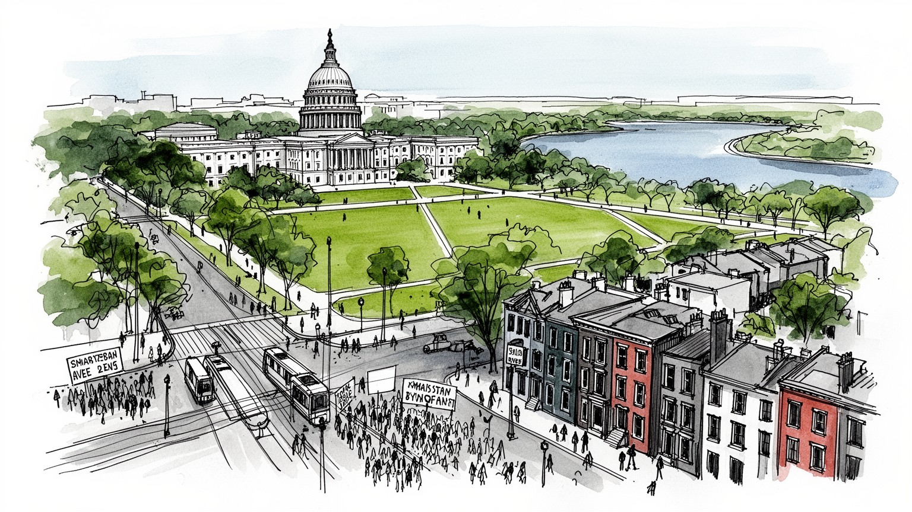
連邦区は州に属さない首都として設計され、議会、大統領府、最高裁、各省庁が短い距離に集まります。外交と安全保障の判断は、郊外の基地、研究機関、空港、大使館にも波及し、世界情勢を街路へ引き込む都市です。
行政職だけでなく、法律事務所、ロビー、シンクタンク、防衛請負、大学、医療、観光、清掃や警備が都市圏を動かします。政府支出は雇用の形を細かく分け、景気変動への耐性も生み、郊外の通勤圏を広げ続けている街です。
黒人教会、移民の礼拝所、国立博物館、大学、音楽クラブが、権力の町とは別の記憶を保ちます。追悼と祝祭が同じ広場で起こり、国家の物語を地域の声が編み直す都市文化を育て、多様な祈りを重ねる街です。今も。
ナショナルモールを歩く観光客の横で、通勤者は地下鉄や環状道路を使い分けるのです。家賃高騰、再開発、治安、教育格差は日常の選択を左右し、観光地の近さが生活費にも響き、暮らす場所を変える力を持つ都市です。
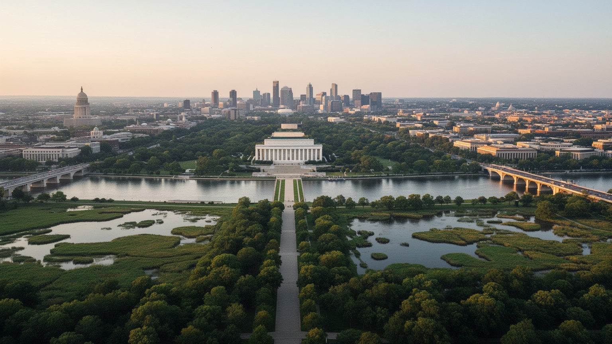
ワシントンDCはポトマック川の北東岸に置かれ、メリーランド州とバージニア州に挟まれた小さな連邦区を核にしています。行政上の面積は限られるが、都市の実感はアーリントン、アレクサンドリア、ベセスダ、シルバースプリングなどを含む大きな通勤圏で成立します。川は記念碑の軸線を映す景観であると同時に、橋と高速道路を通じて職場、住宅、空港、軍施設を結ぶ境界でもあります。東側のアナコスティア川周辺は長く投資から取り残され、近年の再開発で住宅価格と地域文化の緊張が強まったのです。低地の洪水、夏の湿気、桜の季節の観光、郊外から中心部へ向かう通勤流は、政治都市を地形の上に引き戻して読むための手がかりになります。首都の計画は直線的な大通りと広場を強調するが、実際の移動は川、丘、鉄道跡、橋の容量に左右されます。観光客が見る整った眺望の外側では、通勤時間の長さや郊外住宅地の拡散が暮らしを決めます。都市圏として読むと、権力の中心は一つの点ではなく、水辺と州境をまたぐ広い生活圏に支えられています。川沿いの公園や自転車道は余暇の場でありながら、洪水対策や水質改善の課題も抱えます。橋を渡るだけで税制、学校制度、住宅市場が変わるため、住民は行政境界を意識しながら日々の移動を選ぶのです。首都の地理は象徴的な眺望と、生活を分ける実務的な境界を同時に持っています。
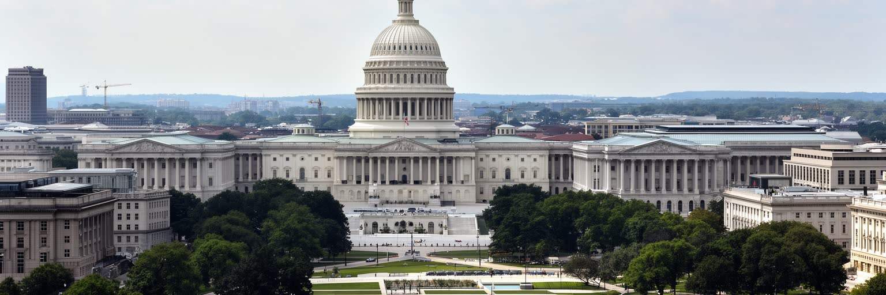
ホワイトハウス、連邦議会議事堂、最高裁判所、各省庁は、地図上では歩けるほど近いです。ですがその近さは、意思決定が単純に進むことを意味しません。議会委員会、官僚機構、政党、裁判、州政府、報道、専門団体が互いに牽制し、法案や予算は長い交渉を経て形を変えます。都市の中心部では、国家を象徴する白い建築と、通勤者の昼食、警備の車列、観光客の列が同じ歩道を共有します。連邦区の住民は国政の中心に暮らしながら、州と同じ代表権を持たないという政治的な矛盾も抱えます。ワシントンDCの権力は、巨大な建物の威圧だけでなく、会議室、裁判所、予算表、公開公聴会、選挙区の利害が絡む日々の手続きとして動きます。大統領選や連邦予算の対立が起こるたび、街の宿泊費、警備体制、通勤経路、抗議の場所まで変わります。政府閉鎖は博物館や公園、契約職員の収入に影響し、国家制度が地域経済に直接触れていることを示します。制度の中心に住む人びとは、権力の近さと暮らしの不安定さを同時に経験しています。政治家は選挙区へ帰り、官僚は長期の制度記憶を持ち、記者は短い速報を追うのです。異なる時間感覚が重なるため、首都の一日は速く見えても、政策の変化は遅いです。そこに都市としての緊張があります。さらに警備区域や臨時閉鎖は、権力が歩道や公園の使い方まで変えることを住民に知らせる現実でもある都市です。
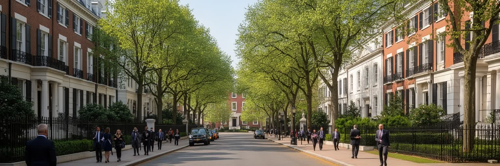
ワシントンDCはアメリカの首都であるだけでなく、世界各国がアメリカ政治を読み、交渉し、発信する外交都市でもあります。マサチューセッツ・アベニュー周辺の大使館街には、国ごとの建築、旗、警備、文化施設が連なり、国際関係が街路の風景として現れます。大使館は単なる事務所ではなく、ビザ、留学生、企業進出、安全保障、文化交流、在外市民の保護を扱う窓口です。国際機関、シンクタンク、大学、報道機関も近く、政策文書や会議の言葉が都市の日常に流れ込むのです。外交の華やかさの背後では、制裁、難民、戦争、通商摩擦、人権問題が議論されます。各国の祝祭や抗議デモが同じ大通りに現れるため、世界情勢の温度差を歩いて感じられる都市になっています。外交官の家族、留学生、通訳、料理人、警備員、運転手、研究者は、国際政治を日常の仕事として支えます。ある国の危機は大使館前の集会になり、別の国の独立記念日は文化イベントとして開かれるのです。首都の国際性は観光的な多文化だけでなく、権力への接近、亡命者の声、通商交渉の緊張を含んでいます。外交街区の近くには各国料理店や文化センターも集まり、移民コミュニティの生活と国家代表の儀礼が交差します。世界の争点は遠いニュースではなく、警備が増えた門前や祈りの集会として都市に現れます。国際都市の華やぎと安全保障の緊張が、同じ街路で隣り合っています。
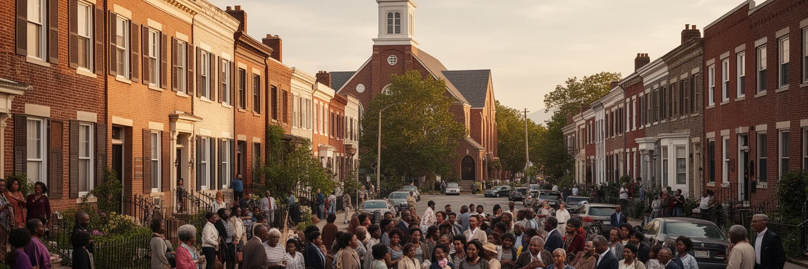
ワシントンDCは長く黒人住民が多数を占めた都市であり、連邦政治の舞台であると同時に、解放、教育、教会、音楽、公民権運動の記憶を蓄えてきました。ハワード大学は黒人知識人、医師、法律家、芸術家を育て、Uストリート周辺はジャズ、劇場、ゴーゴー音楽で知られました。黒人教会は礼拝の場にとどまらず、相互扶助、政治動員、葬儀、地域教育を支える基盤となりました。公民権運動の行進や演説はナショナルモールに刻まれていますが、日常の差別、住宅隔離、都市更新による立ち退きも同じ都市の歴史です。近年は再開発と家賃高騰により、古くからの住民や小商店が押し出される地域も増えました。理髪店、食堂、教会の食事会、学校行事、地域新聞は、政治ニュースに映りにくい都市文化をつくってきました。観光客が訪れる博物館の展示は重要ですが、記憶は建物の中だけにあるわけではありません。子どもの通学路、高齢者の買い物、日曜の礼拝、夜のクラブの低音をたどることで、首都の自由と不平等が同時に見えてきます。公務員として中産階級を築いた家族もいれば、都市更新で住まいを失った家族もいます。黒人史は過去の展示ではなく、学校、投票権、警察、住宅をめぐる現在の判断に続いています。街の音楽と祈りは、政治の中心に暮らす人びとの誇りを支えています。今も続きます。
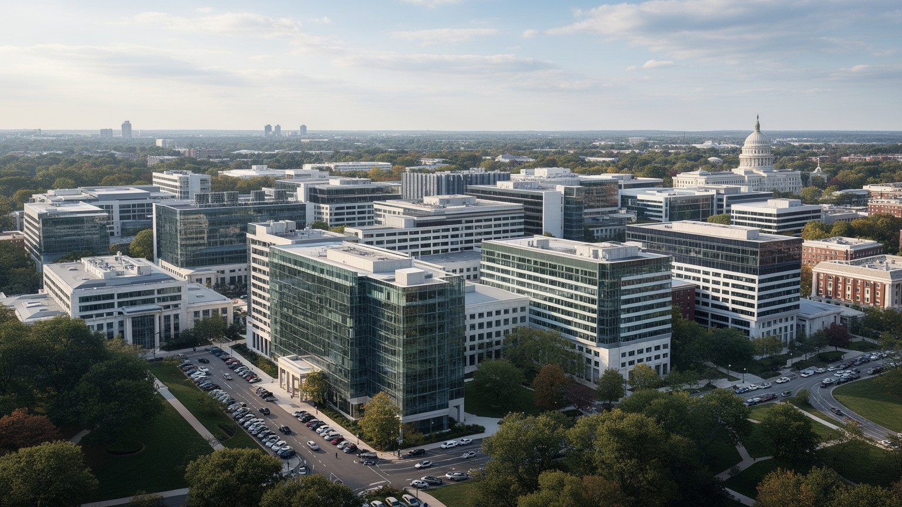
ワシントンDCの経済は、中心部の官庁だけでなく、郊外に広がる防衛、情報、研究、技術サービスの集積に支えられています。ペンタゴン、軍関連施設、政府研究機関、民間請負企業、サイバーセキュリティ企業は、バージニア北部やメリーランド側のオフィス群と結びつきます。高度な専門職が多い一方で、施設管理、清掃、配送、食堂、警備、建設といった仕事も安全保障産業の日常を支えます。政府予算や国際危機は雇用とオフィス需要を左右し、機密性の高い仕事は都市の透明性と距離を生みます。大学や研究病院は人材供給の役割を持ち、退役軍人や移民技術者も労働市場に加わるのです。首都圏の富は、国家安全保障の巨大な制度と、それを運用する多層の労働によって作られています。防衛研究は高い賃金を生むが、契約更新や機密資格に依存する働き方も多く、政治の変化が個人の収入に影響します。技術企業は政府顧客を求めて支社を置き、郊外の住宅価格や交通量を押し上げるのです。戦争や監視をめぐる倫理的な問いも、雇用と地域繁栄の中に入り込んでいます。研究拠点の周辺には高学歴の移住者が増え、学校区や住宅市場に新しい圧力がかかるのです。安全保障の仕事は都市に安定をもたらす一方、国際紛争への依存という重い側面も持ちます。景気の底堅さは魅力ですが、その安定は連邦予算と世界の不安定さに結びついています。都市圏の繁栄は、平和と危機の両方を材料にしています。
ワシントンDCでは、法律事務所、ロビー企業、業界団体、労働組合、非営利団体が、連邦政府の近くに厚い専門職市場をつくります。企業は規制や補助金を読み、自治体や外国政府は議会と省庁に説明を重ね、市民団体は環境、人権、医療、教育の政策を動かそうとします。ロビー活動はしばしば不透明な権益として批判されるが、制度上は多様な利害を政治に届ける仕組みでもあります。問題は、資金力や専門家へのアクセスが発言力の差を広げやすいことです。裁判、規則制定、予算交渉、選挙資金、メディア戦略が互いに接続し、政策は街の会議室やレセプション、公開コメントの文章の中で形を変えます。首都の産業を理解するには、物を作る工場だけでなく、ルールを作る仕事の集中を見る必要があります。弁護士や政策スタッフの需要は大学院教育を引き寄せ、インターンや若い職員は低賃金でも経歴を求めて集まります。その陰で、接客、配達、清掃、保育の労働者が長い通勤を引き受けます。影響力を売買する都市という批判と、制度を使って権利を広げる都市という可能性が同居しています。昼の会議で決まる文言は、医療費、通信料金、労働条件、環境基準として全国へ戻ります。首都の仕事は抽象的に見えますが、生活の細部を変える力を持っています。専門用語が飛び交う廊下の外で、政策の結果を待つ人びとの暮らしがあります。そこを忘れないことが、この都市を見る基準になります。
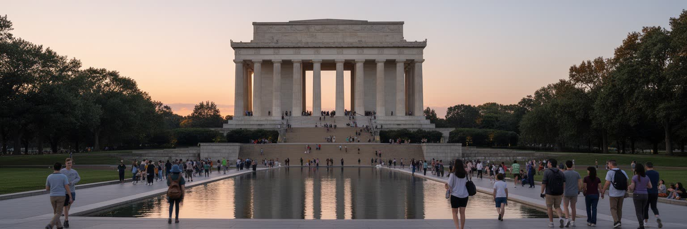
ナショナルモールは、ワシントンDC観光の中心であると同時に、アメリカが自らの歴史をどのように語るかを示す長い舞台でもあります。リンカーン記念堂、ワシントン記念塔、戦争記念碑、公民権運動の記憶、議事堂への眺望は、徒歩で連続して体験できます。観光客は家族旅行、修学旅行、退役軍人の訪問、政治集会など異なる目的で集まり、同じ芝生と歩道を使います。記念碑は英雄や犠牲を讃える一方、先住民、奴隷制、戦争、移民排除、社会運動など、語られにくい歴史への問いも呼び起こすのです。春の桜、夏の暑さ、冬の厳粛な空気は、記念空間の印象を変えます。首都の観光は単なる名所巡りではなく、国家の物語を歩きながら受け取り、時に疑い直す経験になります。広い芝生は開放的に見えますが、警備やイベント準備で通行が制限される日も多いです。売店、フードトラック、屋台、ツアーバス、博物館の列、学校団体の昼食場所が、記念空間を日常的な観光産業へ変えます。写真を撮るだけでなく、誰の記憶が石に刻まれ、誰の声がまだ場所を求めているのかを考えることで、都市の見え方は大きく変わります。夜にライトアップされた記念碑は静かですが、その脇では警備員、清掃員、配車の運転手が働きます。観光は敬意、娯楽、学習、消費を同時に含み、首都の公共空間を広く使わせています。歩く距離の長さや日陰の少なさも、記念空間が身体で経験される場所であることを教えます。
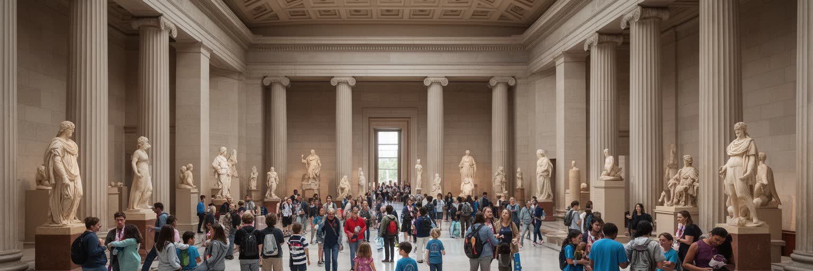
ワシントンDCの文化的な強みは、国立博物館群と大学、図書館、研究機関が近接することにあります。スミソニアンの各館は、多くが無料で入館でき、自然史、航空宇宙、アメリカ史、アフリカ系アメリカ人史、美術を幅広く扱います。観光客にとっては雨の日の避難場所であり、地元の子どもにとっては学校外の教室でもあります。ジョージタウン大学、ジョージ・ワシントン大学、アメリカン大学、ハワード大学などは、政治、国際関係、医学、法学、公共政策の人材を育てます。博物館の展示は中立に見えても、収集の歴史や解説の言葉には時代の価値観が反映されます。教育都市としてのワシントンDCは、知識を保存するだけでなく、歴史の見方を更新し、政策を担う人材を循環させる場所でもあります。学生や研究者は講義室から議会、国際機関、非営利団体へ移動し、学問と実務の距離が短いです。図書館、アーカイブ、公開講座は市民にも開かれ、観光では見落とされがちな学びの生活圏を作ります。一方で高い学費と住宅費は、誰がこの知的環境に参加できるのかという格差を生み出しています。展示を見た子どもが大学へ進み、政策の職場へ戻る循環もあれば、入館は無料でも交通費や時間が壁になる家庭もあります。知の公共性は、建物の開放だけでなく、地域の学校と生活条件に支えられています。学びの豊かさと参加機会の偏りが、同じ都市の中で並んでいます。
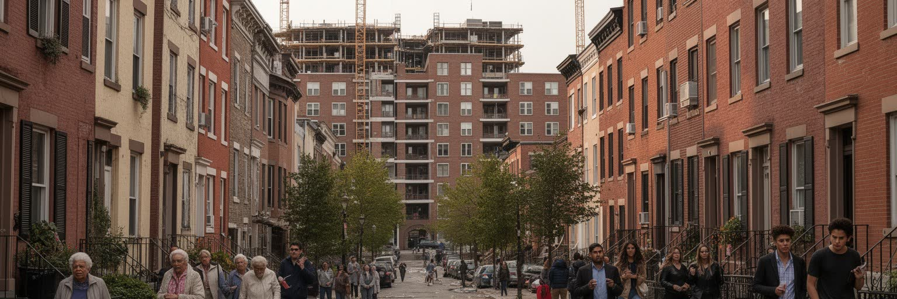
首都圏は高所得の専門職を多く抱える一方、住宅費の上昇が暮らしを圧迫しています。中心部や地下鉄沿線では再開発が進み、古い住宅、倉庫、商店街が新しい集合住宅や飲食店に変わりました。治安や公共サービスが改善する地域もありますが、家賃上昇で長く住んだ住民が移転を迫られ、教会、理髪店、食堂、近所づきあいの網が弱まることもあります。Eastern Market や小さな食料品店、朝の屋台、週末の買い物通りは、地域の所得差と観光化を細かく映します。黒人住民の比率低下は、単なる人口移動ではなく、歴史的な住宅差別、融資、学校区、雇用機会の差とつながります。ホームレス支援、低所得者向け住宅、家賃補助、開発利益の地域還元をめぐる議論は絶えません。新しいカフェや自転車道は暮らしを便利にしますが、地価上昇の合図にもなります。公立学校の評価、通勤時間、治安への不安、保育費は家族の住む場所を分けるのです。住宅政策は都市景観の問題ではなく、地域の記憶、通学、信仰、老後の支えを守れるかどうかに直結しています。高層住宅の供給を増やすべきだという意見と、低層の歴史的街並みを守るべきだという意見はしばしば衝突します。所得の高い転入者と低所得の長期住民が近い距離に暮らすため、格差は統計ではなく日々の買い物や通学路、子どもの遊び場、高齢者の通院に現れます。
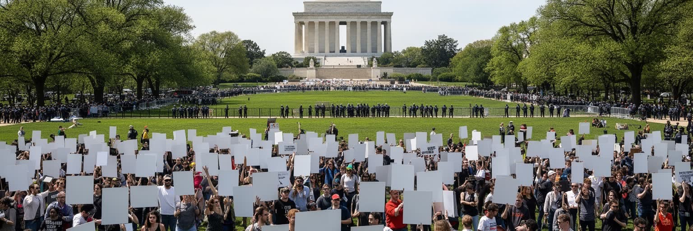
ワシントンDCの広場と大通りは、国家儀礼の場であると同時に、抗議の舞台でもあります。就任式、独立記念日の祝祭、追悼式典が行われる場所に、反戦、人種正義、移民、気候変動、銃規制、女性の権利を訴える人びとが集まります。首都で抗議することは、政府に近づく行為であり、全国や世界へ映像を届ける戦略でもあります。警察、連邦機関、警備フェンス、許可制度は公共空間の使い方を制限するが、それでもナショナルモールやラファイエット広場は政治的表現の象徴であり続けます。抗議は観光客の動線を変え、通勤を遅らせ、住民の生活にも影響します。ですがこの緊張こそ、首都が単なる管理された記念空間ではなく、政治参加の現場であることを示しています。地方から来た参加者はバスで到着し、住民はいつもの公園が全国ニュースの背景になる瞬間を見ます。標語、沈黙、祈り、音楽、警察線は、民主主義の理想と摩擦を同時に可視化します。公共空間を誰が使えるのかという問いは、都市の自由度を測る重要な尺度です。大規模集会のあとには清掃、交通整理、店の営業判断が続き、政治表現は地域の労働にも結びつきます。首都で声を上げることは、象徴的であるほど具体的な負担も伴うのです。小さな追悼や徹夜の座り込みも、巨大な行進と同じく都市の記憶に残ります。広場は管理されながらも、声が集まる余地を持ち続けています。
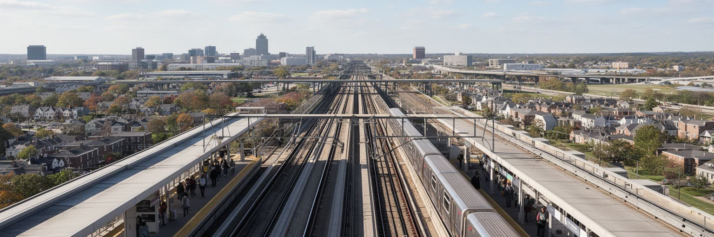
ワシントンDCの生活圏は、地下鉄、バス、通勤鉄道、高速道路、空港によって結ばれています。メトロは都心と郊外の職場、大学、住宅地をつなぐ骨格ですが、運賃、運行間隔、保守、治安への不安は利用者の選択に影響します。環状道路と放射状の高速道路は郊外のオフィスパークや住宅地を支え、車での移動を前提にした生活も根強いです。レーガン・ナショナル空港は中心部に近く、ダレス空港は国際線と技術産業の玄関口として機能します。メリーランドとバージニアをまたぐ通勤は、行政境界を越えた税収、住宅供給、学校、交通投資の調整を難しくします。首都の都市圏を読むには、記念碑の軸線だけでなく、毎朝の乗換えと渋滞が作る広い地図を見る必要があります。交通の選択肢は所得や居住地で偏り、夜勤やサービス職の労働者ほど乗換えの不便を受けやすいです。Nationals Park や Capital One Arena の試合日には、野球、バスケットボール、アイスホッケーの観客が駅と飲食店を一気に混ませます。自転車道や歩行者空間の整備は中心部を変えましたが、郊外全体の移動を公平にするには足りません。交通政策は環境対策であり、住宅政策であり、労働市場を支える基盤でもあります。駅の近さは不動産価値を高める一方、バスに頼る地区との格差を広げます。移動の公平さは、首都の民主的な性格を測る現実的な指標です。
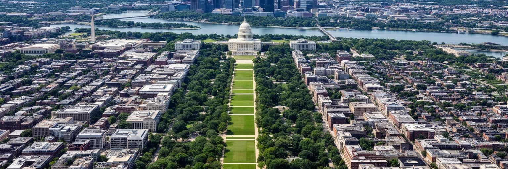
ワシントンDCは、政治の中心という一言で片づけるには複雑すぎる都市です。連邦政府の儀礼、外交交渉、防衛産業、法律市場、国立博物館、黒人史、移民の宗教施設、観光客の記憶、家賃高騰、抗議の声が、狭い連邦区と広い都市圏の中で重なっています。昼間の人口は職場へ流入し、夜には郊外へ戻る人も多いですが、中心部には古い住宅地、学生街、教会、バー、学校、図書館、球場、市場があり、政治とは別の時間が続きます。世界の出来事は大使館や議会に届き、地域の問題は家賃、交通、学校、治安として住民に返ってきます。観光で訪れる人は権力の象徴を短時間で歩けますが、住民にとって都市は買い物、通学、礼拝、通院、職探し、試合観戦、夜の音楽の積み重ねでできています。制度、記憶、格差、移動、公共空間を合わせて見ることで、ワシントンDCは世界都市であり地域社会でもあると理解できます。桜の匂い、夏の湿気、フードトラックの煙、メトロのブレーキ音、ゴーゴーのリズムは、首都を抽象的な制度から生活の場所へ戻します。市場の会話や試合後の歓声も同じ地図に入ります。政治ニュースの背景として消費されやすい都市だからこそ、誰が働き、誰が移動し、誰が住み続けられるのかを具体的に見る必要があります。権力の近くにある日常を読むことが、この都市を立体的に理解する近道です。